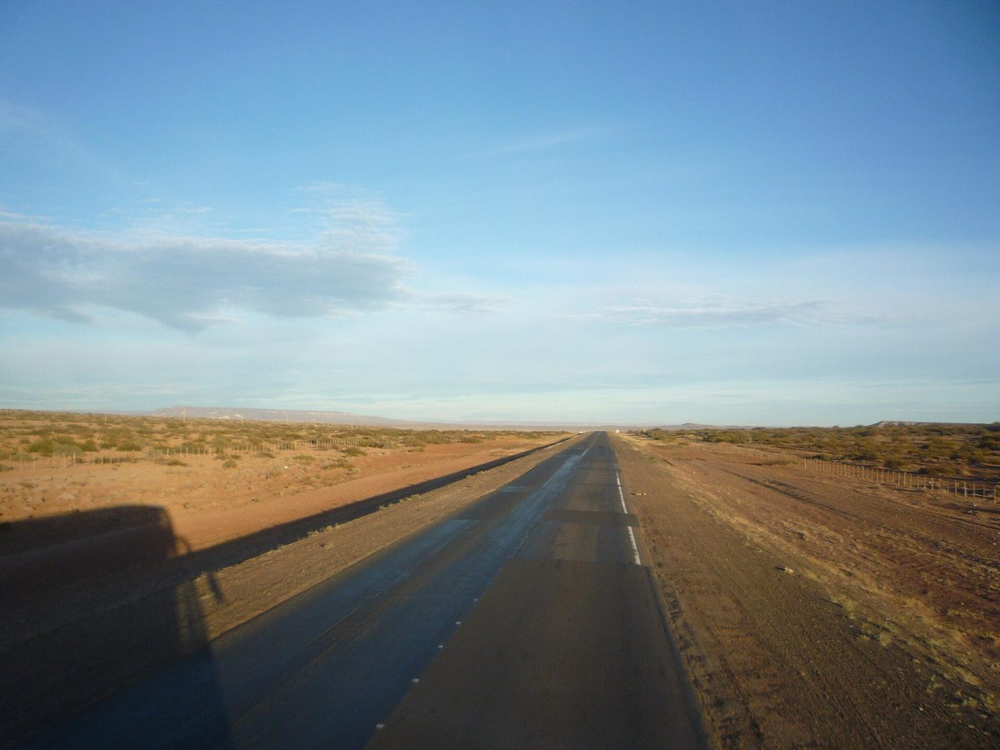

아르헨티나 네우켄 마푸체 공동체, 18MW 태양광 '안투' 지분 34% 가진 공동 개발자…인허가 마치고 전력 구매자 찾는 중

공동체 땅 9,500헥타르 가운데 42헥타르를 주민이 직접 골라…두 기업이 33%씩, 토지 용익 계약은 따로…금융 조달 마감 전, 대형 소비자와 장기 계약이 과제
아르헨티나 네우켄주 사팔라(Zapala)에서 30km 떨어진 곳에 추진 중인 18MW 태양광 단지 '안투(Antú)'에서 마푸체 원주민 공동체 밀라케오(Millaqueo)가 사업회사 지분 34%를 가진 공동 개발자로 참여하고 있다. 나머지 지분은 멜리키나 파트너스(Meliquina Partners)와 수스텐타르 에네르히아(Sustentar Energía SRL)가 33%씩 갖고 있으며, 세 곳이 함께 세운 사업회사 '클라 네우엔 안투(Cla Nehuen Antú)'는 공동체가 지명한 스텔라 마리스 사파타(Stela Maris Zapata)가 회장을 맡고 있다. 공동체는 9,500헥타르에 이르는 자기 땅에서 구성원에게 소중한 곳을 제외 구역으로 정하고 전력 설비와의 거리를 따져 단지 터 42헥타르를 직접 골랐고, 인허가 검토·환경영향평가·재무 분석에도 함께했으며, 지분과 별도로 사업회사와 토지 용익 계약도 맺었다. 멜리키나 파트너스 공동창업자 라미로 페르난데스(Ramiro Fernández)는 InnContext 통신 인터뷰에서 개발 과정의 "모든 결정을 공동체와 함께 내렸다"고 밝히고, 공동체가 다른 개발사와 똑같이 사업 성패의 위험도 함께 진다고 설명했다. 단지는 인허가와 환경영향평가를 마치고 송전망 용량이 빠듯한 이 지역에서 중요한 급전 우선권까지 얻어 공사에 들어갈 허가는 갖췄지만, 도매전력시장(MEM)의 대형 소비자와 장기 전력판매계약을 맺어 금융 조달을 마감하는 일이 남아 있으며, 앞으로의 전기값이 불확실해 기업들이 이런 계약을 꺼린다는 것이 페르난데스의 설명이다. 공동체가 토지 소유권을 넘겨받기까지 약 5년, 네우켄에서 회사를 세우는 데 약 1년 반이 걸렸고 그사이 전력시장 조건이 바뀌어 처음 예상한 경제성도 달라졌으며, 공동 개발 경험은 공동체와 함께 만든 17분짜리 다큐멘터리로 기록됐다.
시민에너지 관점
땅을 내준 공동체가 임대료만 받는 데 그치지 않고 18MW 단지의 지분 34%와 사업회사 회장 자리, 42헥타르 터를 고르는 권한까지 가졌다는 점이 안투의 핵심이다. 주민이 지분을 가지면 사업이 느려지고 주민이 위험까지 떠안는다는 우려가 있지만, 이 사업을 늦춘 것은 약 5년의 토지 소유권 절차와 약 1년 반의 회사 설립 절차, 전력시장 변화였고, 개발사 스스로 공동체 참여가 당국과의 관계를 돕고 임팩트 투자기금·금융기관의 관심을 끌며 사회적 갈등 위험을 줄인다고 말한다. 처음부터 주민이 터를 고르고 지분만큼 위험과 이익을 함께 나누는 사업은 반대에 부딪혀 멈추는 대신 같은 편에서 구매자와 자금을 찾는다. 국내에서도 태양광·풍력 부지의 주민에게 임대료 대신 사업회사 지분과 부지 선정 권한을 주고, 공공기관이 주민 지분 사업의 장기 전력 구매자로 나서 금융 조달의 문을 열어야 한다.
출처: Economía Sustentable 2026-10-30 EconoSus(기자 미표기) 원문 보기
アルゼンチン・ネウケン州のマプチェ共同体、18MW太陽光「アントゥ」の株式34%を持つ共同開発者に…許認可を終え電力の買い手を探す
共同体の土地9,500ヘクタールのうち42ヘクタールを住民自ら選定…企業2社が33%ずつ、土地の用益契約は別途…資金調達完了前、大口需要家との長期契約が課題
アルゼンチン・ネウケン州サパラ（Zapala）から30km離れた場所で進められている出力18MWの太陽光発電所「アントゥ（Antú）」で、先住民マプチェの共同体ミジャケオ（Millaqueo）が事業会社の株式34%を持つ共同開発者として参加している。残る株式はメリキナ・パートナーズ（Meliquina Partners）とスステンタル・エネルヒア（Sustentar Energía SRL）が33%ずつ保有し、3者が共同で設立した事業会社「クラ・ネウエン・アントゥ（Cla Nehuen Antú）」は、共同体が指名したステラ・マリス・サパタ（Stela Maris Zapata）氏が会長を務めている。共同体は9,500ヘクタールに及ぶ自らの土地のうち、構成員にとって大切な場所を除外区域に定め、電力設備との距離も考慮して発電所用地42ヘクタールを自ら選び、許認可の検討や環境影響評価、財務分析にも加わったほか、株式とは別に事業会社と土地の用益契約も結んだ。メリキナ・パートナーズの共同創業者ラミロ・フェルナンデス（Ramiro Fernández）氏はInnContext通信のインタビューで、開発の過程で「すべての決定を共同体とともに下した」と明かし、共同体は他の開発事業者と同じように事業の成否のリスクも負うと説明した。発電所は許認可と環境影響評価を終え、送電網の容量が逼迫するこの地域で重要な給電優先権も得て、着工に必要な許可はそろったが、卸電力市場（MEM）の大口需要家と長期の電力販売契約を結んで資金調達を完了させる作業が残っており、将来の電力価格が不透明なため企業がこうした契約をためらっているというのがフェルナンデス氏の説明だ。共同体が土地の所有権を受け取るまでに約5年、ネウケン州で会社を設立するのに約1年半かかり、その間に電力市場の条件が変わって当初見込んだ採算も変化した。共同開発の経験は、共同体とともに制作した17分のドキュメンタリーに記録されている。
市民エネルギーの視点
土地を提供した共同体が地代を受け取るだけにとどまらず、18MWの発電所の株式34%と事業会社の会長職、42ヘクタールの用地を選ぶ権限まで手にしたことが、アントゥの核心だ。住民が株式を持てば事業が遅れ、住民がリスクまで抱え込むという懸念もあるが、この事業を遅らせたのは約5年の土地所有権の手続きと約1年半の会社設立の手続き、電力市場の変化であり、開発事業者自身が、共同体の参加は当局との関係を助け、インパクト投資ファンドや金融機関の関心を引き、社会的な対立のリスクを減らすと語っている。最初から住民が用地を選び、持ち分に応じてリスクと利益を分け合う事業は、反対にぶつかって止まるのではなく、同じ側に立って買い手と資金を探す。韓国でも太陽光・風力の用地の住民に、地代の代わりに事業会社の株式と用地選定の権限を与え、公的機関が住民出資事業の長期の電力の買い手となって資金調達の道を開くべきだ。
出典: Economía Sustentable（エコノミア・サステンタブレ） 2026-10-30 EconoSus（記者名なし） 原文を読む
阿根廷内乌肯省马普切社区成为18MW光伏项目“安图”的共同开发者，持股34%…已完成审批，正在寻找电力买家
社区从9,500公顷土地中亲自选定42公顷…两家企业各持33%，土地用益合同另行签订…融资尚未完成，与大用户签订长期合同是关键
在阿根廷内乌肯省距萨帕拉（Zapala）30公里处推进的18MW光伏电站“安图（Antú）”项目中，马普切原住民社区米亚克奥（Millaqueo）以项目公司34%股份的共同开发者身份参与其中。其余股份由梅利基纳合伙公司（Meliquina Partners）和苏斯滕塔尔能源公司（Sustentar Energía SRL）各持33%，三方共同成立的项目公司“克拉·内文·安图（Cla Nehuen Antú）”由社区指定的斯特拉·马里斯·萨帕塔（Stela Maris Zapata）担任董事长。社区在自有的9,500公顷土地中，把对成员有重要价值的地方划为排除区，并考虑与电力设施的距离，亲自选定了42公顷电站用地，还参与了审批文件审查、环境影响评价和财务分析；除持股外，社区还与项目公司签订了土地用益合同。梅利基纳合伙公司联合创始人拉米罗·费尔南德斯（Ramiro Fernández）在接受InnContext通讯社采访时表示，开发过程中“所有决定都是与社区共同作出的”，并说明社区与其他开发商一样，也承担项目成败的风险。电站已完成审批和环境影响评价，还在输电网容量紧张的这一地区获得了重要的调度优先权，具备了开工所需的许可，但仍需与批发电力市场（MEM）的大用户签订长期售电合同以完成融资；费尔南德斯表示，由于未来电价不确定，企业对签订此类合同态度谨慎。社区花了约5年才取得土地所有权，在内乌肯省设立公司又用了约1年半，其间电力市场条件变化，最初预期的经济性也随之改变。共同开发的经历已被记录在与社区共同制作的17分钟纪录片中。
市民能源视角
安图项目的核心在于，提供土地的社区不只收取租金，而是拿到了18MW电站34%的股份、项目公司董事长职位，以及选定42公顷用地的权力。有人担心居民持股会拖慢项目，还让居民承担风险，但拖慢这一项目的是约5年的土地所有权手续、约1年半的公司设立手续和电力市场变化，开发商自己也说，社区参与有助于与政府部门的关系，能吸引影响力投资基金和金融机构的关注，并降低社会冲突风险。从一开始就由居民选址、按持股共担风险、共享收益的项目，不会因反对而停滞，而是站在同一边寻找买家和资金。韩国也应让光伏、风电用地的居民获得项目公司股份和选址权，而不只是租金，并由公共机构担任居民持股项目的长期电力买家，为融资打开大门。
来源: Economía Sustentable（阿根廷《可持续经济》） 2026-10-30 EconoSus（未署名） 查看原文
Mapuche community in Argentina's Neuquén holds 34% of the 18MW Antú solar project as co-developer, now permitted and looking for a power buyer
Residents chose the 42-hectare site themselves on their 9,500 hectares; two companies hold 33% each and a separate land usufruct contract is in place; financial close still pending, with a long-term deal with a large consumer the key hurdle
The Mapuche Indigenous community of Millaqueo is taking part as a co-developer holding 34% of the project company behind Antú, an 18MW solar park being developed 30km from Zapala in Argentina's Neuquén province. The remaining shares are held 33% each by Meliquina Partners and Sustentar Energía SRL, and the project company the three set up, Cla Nehuen Antú, is chaired by Stela Maris Zapata, who was appointed by the community. On its own 9,500 hectares, the community picked the 42-hectare site itself, marking out exclusion zones that matter to its members and weighing the distance to power infrastructure, and it also took part in reviewing permits, the environmental impact assessment and the financial analysis, while holding a separate land usufruct contract with the company on top of its stake. Ramiro Fernández, co-founder of Meliquina Partners, told the InnContext news agency that "all the decisions" in developing the project were taken with the community, and said it carries the same risk of success or failure as the other developers. The park has completed its permits and environmental assessment and secured dispatch priority, which matters in an area where transmission capacity is tight, so it holds the permits needed to start building, but it still has to sign a long-term power sales contract with a large consumer on the wholesale electricity market (MEM) to reach financial close, and Fernández said uncertainty over future power prices is making companies wary of such contracts. It took about five years for the community to receive title to the land and about a year and a half to set up the company in Neuquén, while changes in market conditions altered the economics first expected, and the co-development experience has been recorded in a 17-minute documentary made with the community.
Citizen Energy View
What sets Antú apart is that the community providing the land does not just collect rent but holds 34% of an 18MW park, the chair of the project company and the power to choose the 42-hectare site. Some worry that resident ownership slows projects down and leaves residents carrying risk, but what delayed this one was a land title process of about five years, about a year and a half to set up the company and shifts in the power market, and the developer itself says community participation helps relations with the authorities, draws interest from impact funds and lenders and lowers the risk of social conflict. A project in which residents choose the site from the start and share risk and returns in line with their stake does not stall in the face of opposition; it looks for buyers and money with everyone on the same side. Korea should give residents near solar and wind sites a stake in the project company and a say in siting instead of rent alone, and public bodies should step in as long-term buyers of power from resident-owned projects to open the way to financing.
Source: Economía Sustentable 2026-10-30 EconoSus (no byline) Read the original